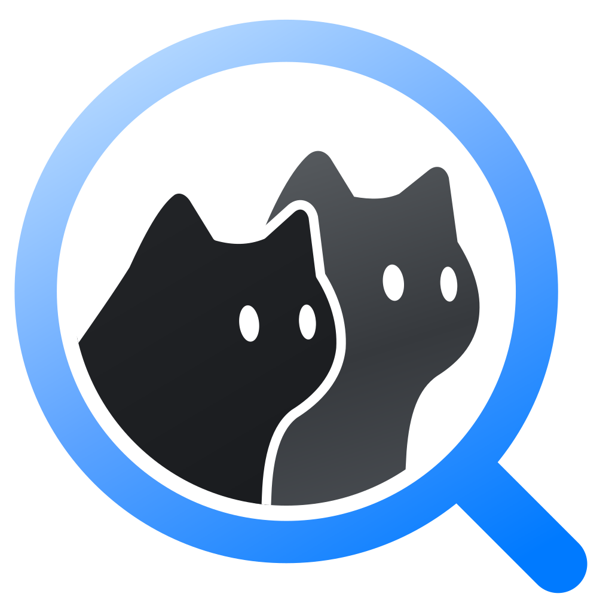

Déjà View
You’ve seen it before. Now you can find it again.
Save any social link or screenshot in one tap. Apple Intelligence reads, categorizes, and finds it when you ask in plain language, even in Airplane Mode.
Today
40+ bookmarks buried across 6 apps
Instagram saves, TikTok links, X threads, and unnamed screenshots
Déjà View
Asked “resep” in Airplane Mode
Matched Indonesian recipe post, explained why, zero server calls
Targets
Best Tool Design
Most Creative Feature
Best Production Readiness
Twin black cats for déjà vu. A blue lens for recall.

The Brand Concept
Twin black cats embody a déjà vu feeling, while the blue search motif expresses fast retrieval and discovery of your saved content with AI assistance.
Mono
Search
Find
Recall
Assist
Déjà View Blue Palette (Zero Purple)
#BED7F7
#5FA1ED
#3B7DD8
#E7F1FC
#313235
-
Native first, quiet chrome
System Liquid Glass bars, Dynamic Type text styles, and
secondarySystemBackground16pt cards. -
SF Symbols only, zero third-party logos
Platforms appear as clean
.caption2text labels; colour and motion fire only when AI acts.